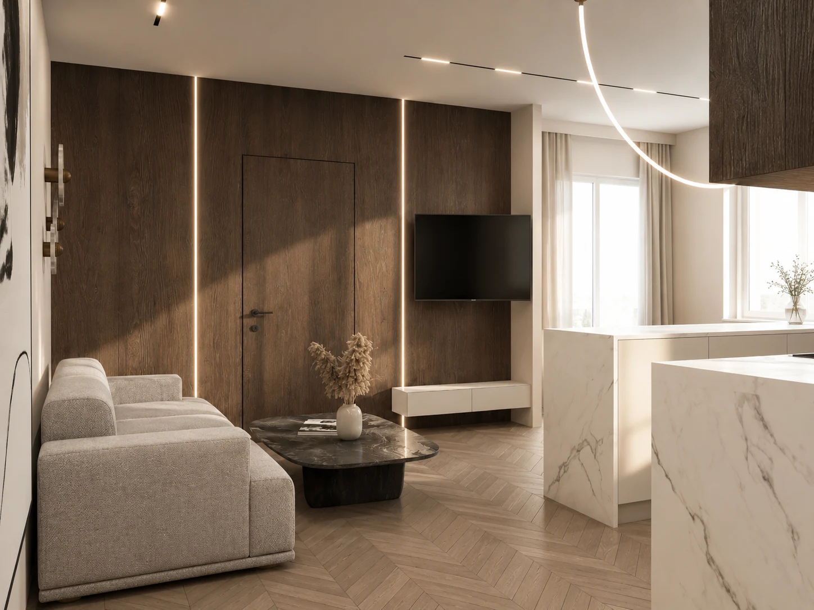
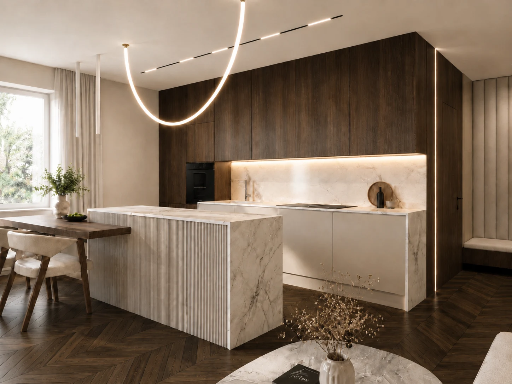
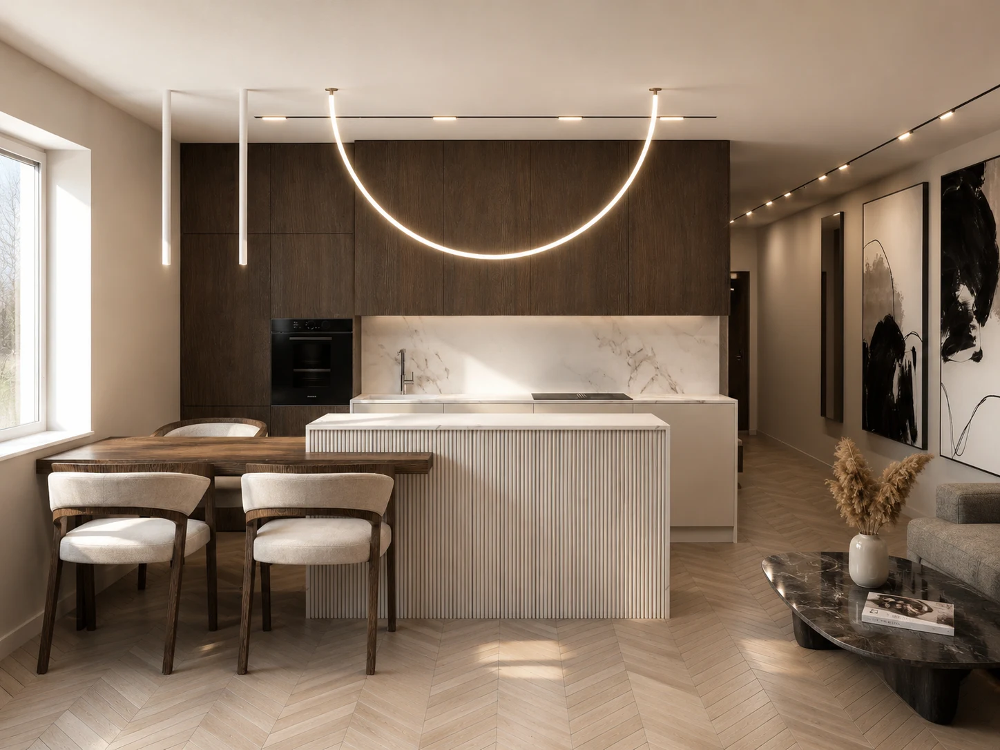
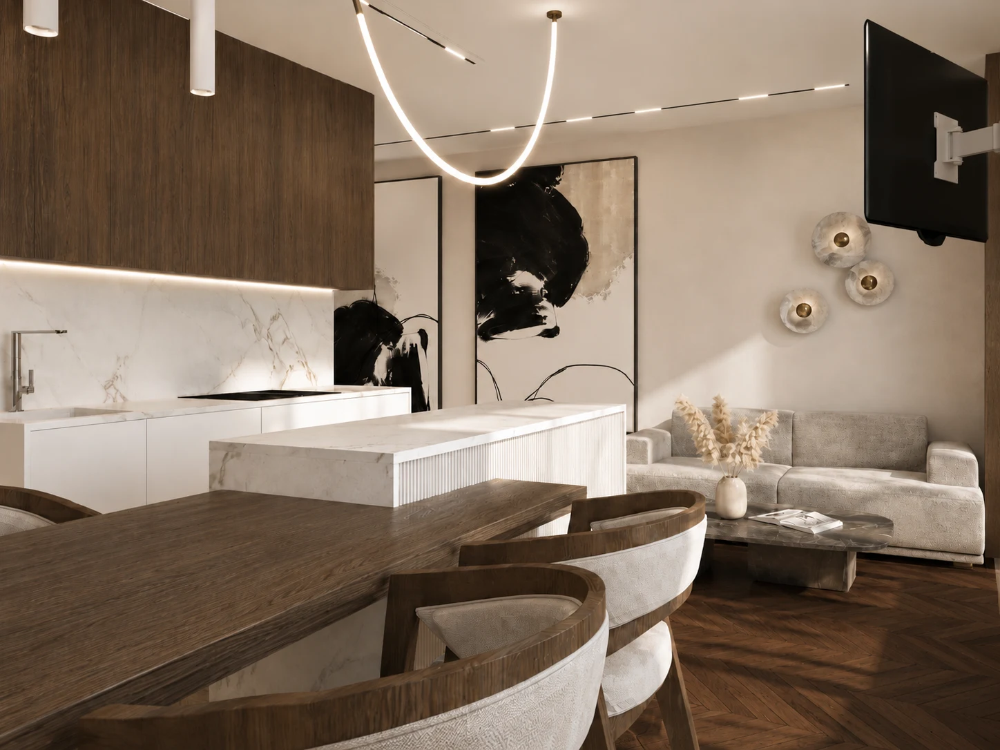
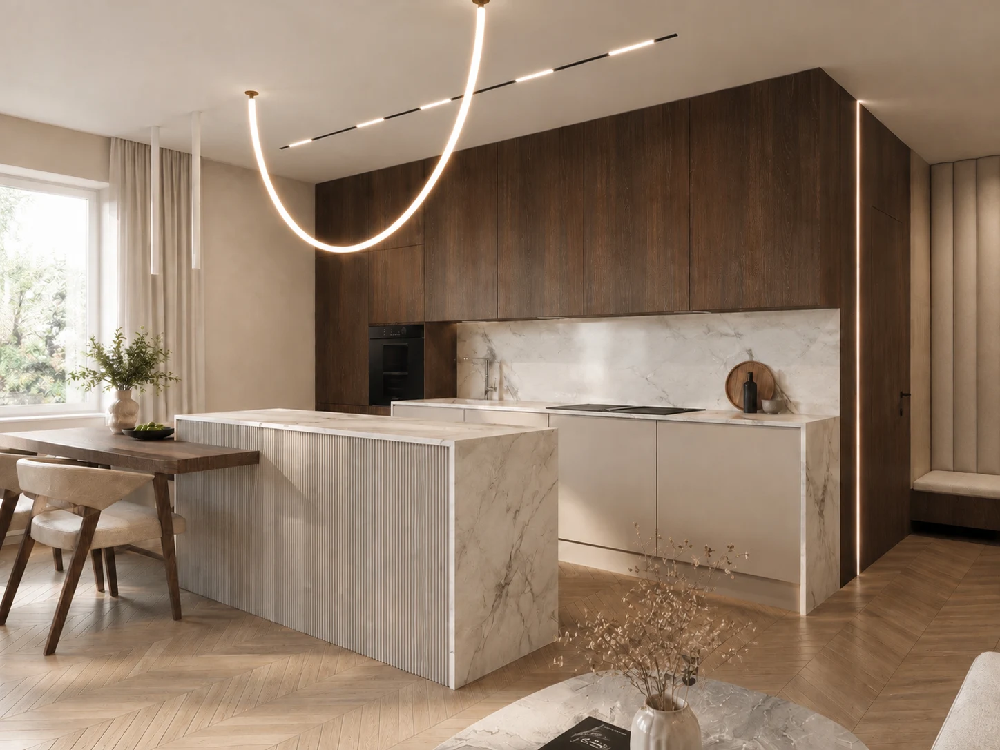
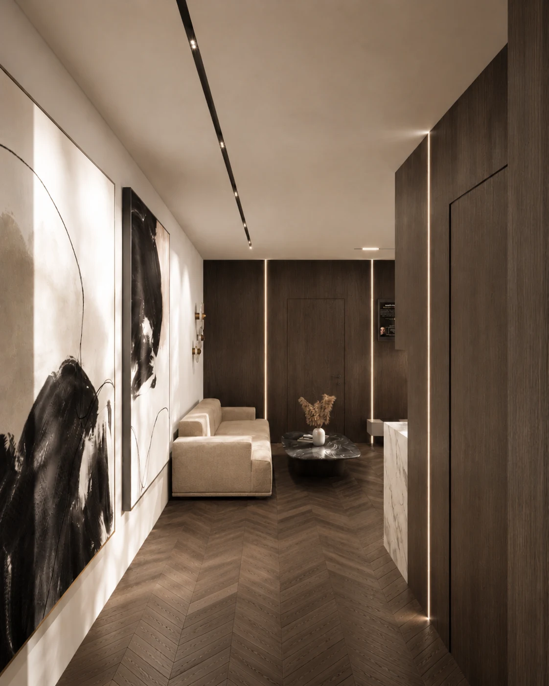
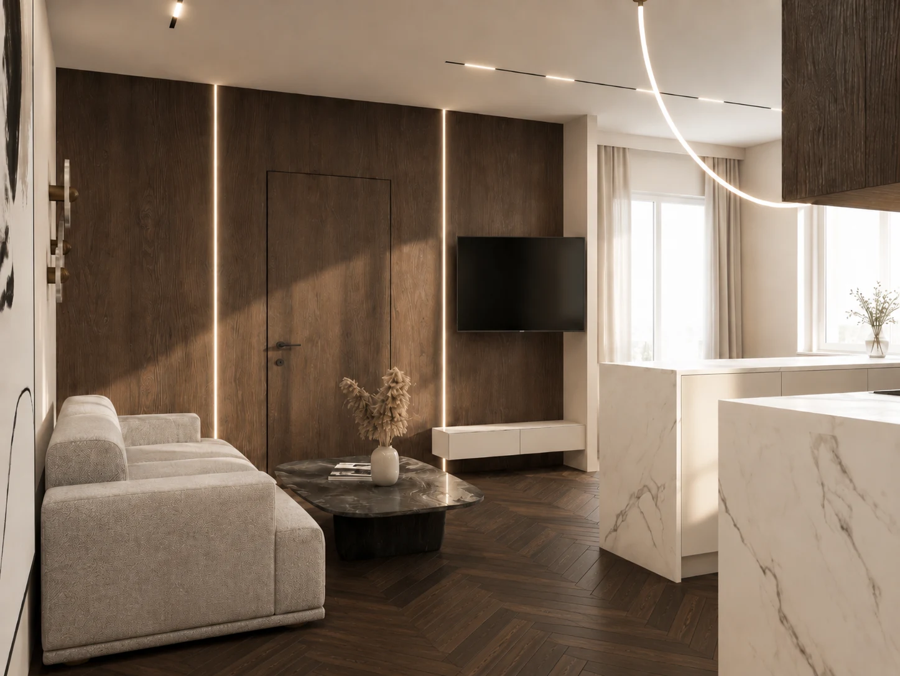
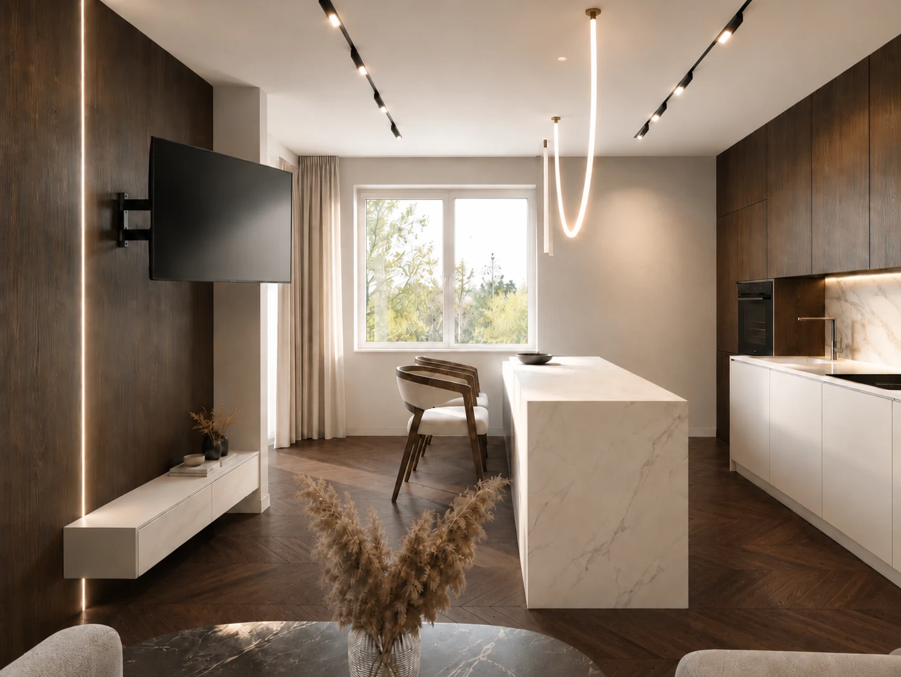

Konsultacja projektowa
Pomoc w decyzjach dotyczących układu, kolorów, materiałów, oświetlenia i kierunku wnętrza.

archstudiokm / Kochanowice / Lubliniec / Częstochowa
Studio projektowania wnętrz Katarzyny Michoń-Kotas w Kochanowicach. Realizujemy projekty dla klientów z Lublińca, Częstochowy i okolic — od koncepcji po szczegółową dokumentację.

O studio
archstudiokm prowadzi projekty wnętrz w Kochanowicach, Lublińcu, Częstochowie i innych miejscowościach regionu oraz online — mieszkań, domów, kuchni, salonów, pokoi dziecięcych i przestrzeni komercyjnych. Każdy projekt zaczyna się od rozmowy i poznania potrzeb.
W pracy łączymy jasne przestrzenie, naturalne materiały, funkcjonalne układy i eleganckie detale. Dzięki temu wnętrze jest spójne, ale nadal dopasowane do codziennego życia.
Oferta
Zakres współpracy dobieramy do potrzeb: od konsultacji i koncepcji po kompleksowy projekt. Ceny ustalane są indywidualnie po poznaniu metrażu i zakresu prac.
Pomoc w decyzjach dotyczących układu, kolorów, materiałów, oświetlenia i kierunku wnętrza.
Układ funkcjonalny, klimat, inspiracje, kolorystyka i pierwszy kierunek wizualny projektu.
Pełne opracowanie wnętrza z wizualizacjami, materiałami, rysunkami i listą elementów.
Biura, sale zabaw, lokale usługowe oraz przestrzenie wymagające funkcji i dobrego pierwszego wrażenia.
Wizualizacje
Ciepłe drewno, jasny kamień i liniowe światło tworzą spójną strefę dzienną, w której kuchnia, jadalnia oraz salon naturalnie łączą się w jedną całość.









Proces
Rozmawiamy o stylu życia, funkcjach, budżecie i oczekiwanym klimacie wnętrza.
Tworzymy układ funkcjonalny, kierunek stylistyczny, inspiracje i bazę projektu.
Dopracowujemy materiały, kolorystykę, zabudowy, oświetlenie i finalny efekt.
Obszar działania
Studio działa w Kochanowicach i obsługuje inwestycje w regionie. Najczęściej współpracujemy z klientami z Lublińca, Częstochowy oraz pobliskich miast, a część procesu może odbywać się również online.
Projektowanie mieszkań, domów i pojedynczych pomieszczeń blisko siedziby studia.
02Kompleksowe projekty wnętrz, koncepcje, wizualizacje i dokumentacja dla inwestycji w mieście i okolicy.
03Wsparcie projektowe dla mieszkań i domów — od układu funkcjonalnego po materiały wykonawcze.
04Projekty dopasowane do metrażu, budżetu i etapu inwestycji, z możliwością pracy hybrydowej.
05Projektowanie wnętrz mieszkalnych i funkcjonalnych stref dziennych w regionie.
06Lokalna współpraca w najbliższym otoczeniu studia — konsultacje i pełne projekty.
Artykuły
Poradniki dla osób planujących remont, budowę lub współpracę z projektantem wnętrz w rejonie Lublińca, Częstochowy i online.
Od pierwszej rozmowy, przez układ funkcjonalny, aż po wizualizacje i dokumentację.
Najważniejsze elementy, które wpływają na zakres prac i końcową cenę projektu.
Co warto zebrać, przemyśleć i ustalić, aby sprawnie rozpocząć współpracę.
Kontakt
Napisz, czego dotyczy projekt, jaki zakres Cię interesuje i na jakim etapie jesteś. Oferta zostanie dobrana indywidualnie.